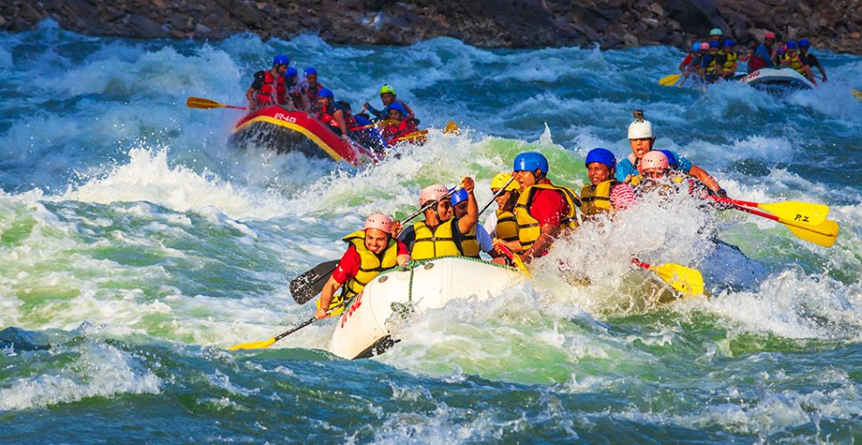
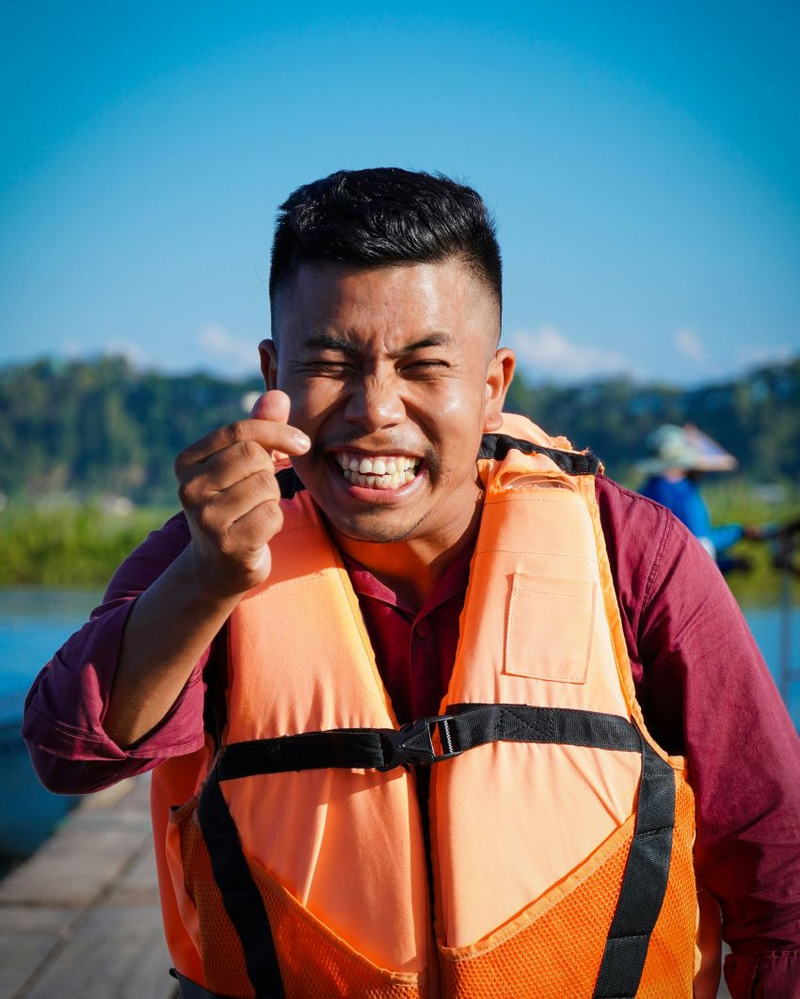

At Rafting Adventures, our purpose is to provide exciting and safe whitewater rafting experiences for people of all skill levels. Our mission is to connect individuals and families with nature through adventure while promoting teamwork, respect for the environment, and personal growth. We strive to create unforgettable memories on every journey, inspiring confidence, courage, and a love for the outdoors. Our trained guides ensure every trip is both thrilling and safe, while our focus on sustainable practices helps preserve the rivers and landscapes we explore. Join us to challenge yourself!


Rafting Adventures
History
Rafting Adventures was founded with a passion for outdoor exploration and adventure sports. What started as a small group of rafting enthusiasts quickly grew into a professional company dedicated to sharing the excitement of whitewater rafting with others. Over the years, we have guided people from different backgrounds and experience levels, always focusing on safety, fun, and respect for nature. Today, Rafting Adventures continues to grow, offering unforgettable river experiences while staying true to our love for adventure and the outdoors.